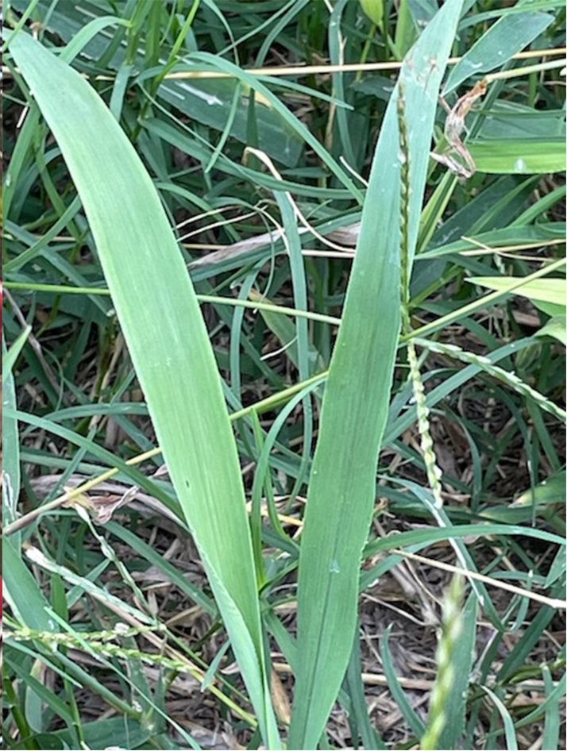
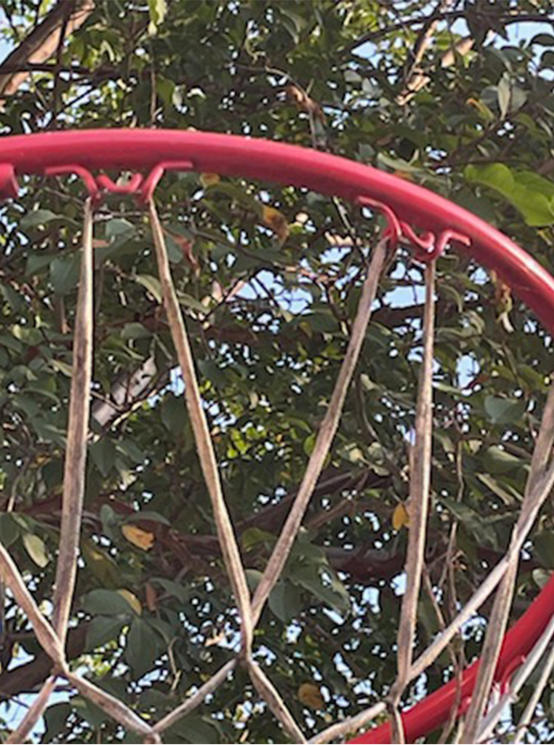

You can find letters naturally occurring just about anywhere. It's all just a matter of gaining a new prespective.
At your local park. These are just a couple of images to get you started but they can be found anywhere. A V made of two blades of grass and A M form on a basketball net.M on a Hoop From trees, flowers and even park benches, you'll be suprised at how many letters are hiding in plain sight.
 